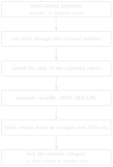

# code/chapter_11/eval_metrics.py
def recall_at_k(results: list[dict], k: int) -> float:
hits = [r for r in results if r.get("rank") is not None and r["rank"] <= k]
return len(hits) / len(results) if results else 0.011 Evaluating Retrieval Quality
Progress ███████████░░ 11 / 13 · Estimated time: 60–90 min · Difficulty: 🔴 Advanced
11.1 Learning objectives
By the end of this chapter, you will be able to:
- Build a hand-labeled evaluation set that records, per question, the expected source report and page.
- Compute
recall@k, Mean Reciprocal Rank (MRR), andNDCG@k, and explain what each number actually tells you. - Break results down by question category and difficulty to find where a system fails, not just whether it does.
11.2 Operational Problem
Oumy, the drilling engineer, has one blunt question before this system goes anywhere near her rig: “it feels like it’s working” is not a standard you should ship an engineering decision-support tool against. You need a defensible answer to “how good is it” — and, more usefully, “which kinds of questions does it get wrong.” The companion pipeline ships an evaluation harness for exactly this, scripts/run_eval.py, built against a real question set for a different (private, North Sea) campaign it was originally developed on. It has not yet been run against the Utah FORGE archive — no evaluation question set exists for this well yet. That’s not a gap in the tooling; it’s the natural next step, and this chapter walks you through doing it for real, against the same archive you’ve used throughout this book.
11.3 Building your own question set
Rather than presenting borrowed results, build a small evaluation set against the ten-report Part I sample, where you already know the correct answer for each question (the ground truth) from having read the reports yourself in Chapters 1–5:
NoteA starter evaluation set for the Part I sample
Q1: "Which report describes pipe becoming stuck during a slide?"
expected: FORGE-16A-78-32_Drilling_038_2020-11-26.pdf
Q2: "Which report shows packers failing to set?"
expected: FORGE-16A-78-32_Drilling_049_2020-12-07.pdf
Q3: "Which report describes milling up lost pieces of bit?"
expected: FORGE-16A-78-32_Drilling_050_2020-12-08.pdf
Q4: "Which report mentions mud fluid seepage losses?"
expected: FORGE-16A-78-32_Drilling_019_2020-11-07.pdf
Q5: "Which report shows the crew rigging up before spud?"
expected: FORGE-16A-78-32_Drilling_003_2020-10-22.pdfEach question has exactly one verifiable correct answer, because you picked these five reports for their distinct, checkable events in Chapters 1–5. This is the right way to start an evaluation set: begin with cases you can verify by eye, before scaling to enough volume that you can no longer read every answer yourself.
11.4 Theory
Three metrics, each answering a slightly different question:
recall@k— did the correct answer appear anywhere in the top k results? Simple, and the right first metric to compute.- Mean Reciprocal Rank (MRR) — averages
1 / rankof the correct answer across all questions. Rewards getting the right answer to rank #1, not just somewhere in the top 10 — closer to what a user actually experiences. NDCG@k(Normalized Discounted Cumulative Gain) — like recall, but weights a hit at rank 1 more than a hit at rank 5, and normalizes so the score is comparable across queries with different numbers of correct answers.
TipEngineering Translation: recall@k
recall@k asks a plain yes/no question: did the right report make your shortlist of the top k results at all? It’s like asking whether the correct casing point made your shortlist of candidate depths — it doesn’t care whether it was the first one you’d pick or the last, only whether it was on the list.
TipEngineering Translation: Mean Reciprocal Rank
MRR rewards a correct answer for landing near the top, not just somewhere on the list. It’s the difference between “the right depth was in my top 5” and “the right depth was my very first pick” — the second is worth more, and MRR is the metric that actually reflects that.
TipEngineering Translation: NDCG@k
NDCG@k is a more careful version of recall@k: instead of a flat yes/no, it gives partial credit based on exactly where the right answer landed — full credit at rank 1, a bit less at rank 2, less still further down — rather than treating “found it at #1” and “found it at #5” as equally good.
None of these require deep statistics to use well — they require a good evaluation set: real questions, with a real, known correct source recorded in advance. Building that set by hand, from your own archive, is more valuable than the metric computation itself, because writing the questions forces you to think like the engineer who will actually use the system.
One caveat applies to all three at this book’s scale: with five questions over ten reports, every one of these numbers is coarse. recall@k can only move in whole 20% steps (one question out of five), and a single answer sliding from rank 1 to rank 2 swings MRR and NDCG noticeably. Treat the values you compute here as showing how the metrics behave, not as a benchmark — they only start to mean something once the question set is large enough that no single answer can move them much. The challenge exercise’s fifteen questions over all 76 reports is the first step in that direction.

11.5 Implementation
11.5.1 Step 1: did the right answer make the shortlist at all?
What problem are we solving?
Check, for every evaluation question, whether the correct report showed up anywhere in the top k retrieved results — a simple yes/no per question.
Inputs
- A list of result dicts, one per evaluation question, each recording the rank the correct report was found at (or
Noneif it wasn’t found). k: how far down the results to look.
Expected Output
A single number between 0 and 1 — the fraction of questions where the correct report was within the top k.
What just happened?
For each question, this checks whether the correct report’s rank is within k — a plain hit or miss — then reports what fraction of all questions counted as a hit. It says nothing about how close to the top a hit was, which is exactly the gap the next two metrics fill.
11.5.2 Step 2: reward landing near the top, not just anywhere
What problem are we solving?
Give more credit to a correct answer that ranked first than one that merely appeared somewhere in the results — closer to what a user actually experiences when scanning a results list top to bottom.
Inputs
- The same list of result dicts as Step 1.
Expected Output
A single average score: higher when correct answers tend to rank near the top, lower when they’re buried further down or missing.
def mrr(results: list[dict]) -> float:
scores = [1.0 / r["rank"] if r.get("rank") else 0.0 for r in results]
return sum(scores) / len(scores) if scores else 0.0What just happened?
Each question’s score is 1 / rank — rank 1 scores a full 1.0, rank 5 scores only 0.2, and a miss scores 0. Averaging those scores across every question produces one number that rewards first-place correct answers far more than answers merely present somewhere in the list.
11.5.3 Step 3: give partial credit based on exact position
What problem are we solving?
Combine the best of both previous metrics: a graded score, like MRR, but one that treats “found in the top k” as the relevant window, like recall@k.
Inputs
- The same list of result dicts, plus
k.
Expected Output
A single average score, weighted so a hit at rank 1 counts more than a hit at rank 5, and anything beyond k counts as zero.
def ndcg_at_k(results: list[dict], k: int) -> float:
import math
scores = []
for r in results:
rank = r.get("rank")
scores.append(1.0 / math.log2(rank + 1) if rank and rank <= k else 0.0)
return sum(scores) / len(scores) if scores else 0.0What just happened?
Instead of 1 / rank (MRR), each hit’s credit shrinks by 1 / log2(rank + 1) — a gentler slope that still rewards a rank-1 hit the most, still penalizes a rank-5 hit, but doesn’t fall off quite as sharply. Anything outside the top k scores zero, same as recall@k.
Each result dict records, per evaluation question, the rank at which the known-correct report was retrieved (or None if it wasn’t in the top k considered). This mirrors the shape of _recall_at_k(), _mrr(), and _ndcg_at_k() in the companion repository’s scripts/run_eval.py.
11.6 Production Reality
The evaluation set in this chapter has five questions, and the challenge exercise’s has fifteen — genuinely useful, but still small next to a real deployment. A few realities worth planning for:
- an evaluation set needs to keep growing as new report types, wells, and question styles show up — five questions that were exhaustive for the Part I sample won’t stay representative of a live system fielding real engineers’ questions
- tuning the retrieval pipeline specifically to score well against your own evaluation set risks overfitting to it — the same way memorizing an exam’s specific questions isn’t the same as knowing the material. Holding some questions back, or continuously adding new ones, keeps the score honest
- an aggregate metric is a summary, not a substitute for periodically reading real answers by eye — especially before a decision with real consequences rides on the system’s output
- who writes the evaluation questions matters — a question set written entirely by the person who built the retrieval pipeline tends to test what that person already thought to check, not what a working engineer will actually ask
11.7 Practical exercise
🟢 Beginner
Try it yourself: Run the five questions above through Chapter 9’s hybrid_search() over the ten-report sample archive, record each correct report’s rank, and compute recall@3 by hand.
You’ll know it worked when: you have a small CSV or JSON file mapping question → expected report → observed rank, and a recall@3 score you can quote and defend — because you wrote and verified every question yourself. On this five-question set every expected report lands in the top three, so recall@3 comes out to 1.0; don’t read that as “retrieval is solved,” though — five hand-picked, distinctly-worded questions over ten reports is the easiest case there is, which is exactly why the challenge below scales it up to fifteen questions over all 76.
11.8 Field notes
Important🔧 Field notes: ‘better’ isn’t monotonic — track one hard question across every chapter
Action: track report #39’s rank for the query "stuck pipe" through every retrieval method this book has built so far, instead of just looking at one final aggregate score.
Result:
Chapter 3 keyword (AND) not found at all (0 of 10)
Chapter 4 dense, whole-document rank 5 of 10
Chapter 9 hybrid, pipeline weights (BM25x2.0/dense x0.5) rank 9 of 10
Chapter 9 hybrid, equal weights (1.0/1.0) rank 7 of 10Why: each chapter’s technique is a genuine improvement in general — that’s not in question. But this specific, operationally important question doesn’t improve monotonically as the pipeline gets more sophisticated. It gets a little better (Chapter 4), then gets worse twice in a row (Chapter 9’s two weightings) before hybrid retrieval’s other strengths (Chapter 9’s "packers fishing" example) show up clearly.
Lesson: a single aggregate metric — recall@5 averaged across your whole evaluation set — can climb steadily from chapter to chapter while a specific, real question you care about gets worse. This is exactly why Chapter 9 insisted on per-category breakdowns and why this chapter opened by building your own question set rather than trusting someone else’s summary number: the only way to know if your hard questions are improving is to track them individually, the way this table just did.
11.9 Challenge exercise
🔴 Advanced
Challenge: Extend your five-question set to at least 15 questions against the full 76-report archive (datasets/forge_archive/), and compute recall@5. This is genuinely useful, unpublished work: as far as this book’s companion pipeline is concerned, you’ll be building the first real evaluation set for Utah FORGE. Save your question set alongside your results — it’s the seed of exactly the kind of evaluation harness scripts/run_eval.py runs at scale once one exists. A reference solution approach is in code/chapter_11/challenge/.
Don’t be alarmed if recall@5 comes back much lower than you’d expect from Part I — the reference solution’s own 15-question set, run against all 76 reports with Chapter 4’s plain whole-document embeddings, scores recall@5 of only 0.47. That’s not a bug: at 10 candidates, chance alone gets you partway there, and whole-document dilution barely matters. At 76 candidates, both problems compound. A low score here is the honest, measured version of the same lesson Chapter 9 already taught — it’s exactly what motivates hybrid retrieval and reranking before this system sees a real, full-scale archive.
11.10 Key takeaways
- An evaluation set with known correct answers is more valuable than any single retrieval technique — it’s what tells you whether a technique helped.
recall@k, MRR, andNDCG@kanswer different questions; report more than one.- Don’t trust a system’s evaluation results from a different dataset as a proxy for how it performs on yours — a harness that scored well on one campaign says nothing certain about a new well until you build and run a question set against that well’s own archive, which is exactly what this chapter had you do.
11.11 Repository files
| File | Purpose |
|---|---|
code/chapter_11/eval_metrics.py |
recall@k, MRR, NDCG@k implementations |
DDR_UTAH_FORGE/scripts/run_eval.py |
Evaluation harness (companion repo — requires DDR_UTAH_FORGE) — ready to point at a Utah FORGE question set once you build one |
CautionCHECKPOINT — Chapter 11
Tip✓ WHAT YOU BUILT
eval_metrics.py plus a real, hand-verified evaluation set — the first ever built against this archive, with a defensible number attached to “how good is it.”
11.12 What can you do now that you couldn’t do before?
You can put a defensible number on how well your retrieval system actually works, broken down by the kinds of questions it handles well and the ones it doesn’t — instead of shipping a decision-support tool on the strength of “it feels like it’s working.”
11.13 Suggested next step
Coming up in Chapter 12: Every discipline from Chapters 6–11 — OCR gating, structured chunking, hybrid retrieval, traceability, evaluation — exists in service of a single payoff: finding things in an archive a human reading it linearly would miss. Chapter 12 builds toward that payoff, using a real sequence of events already in this archive.